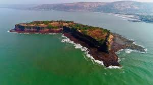
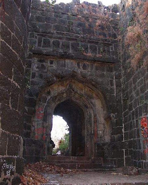
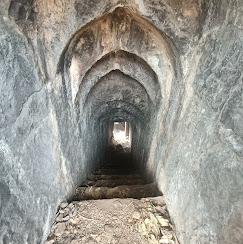
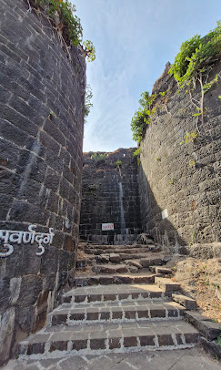
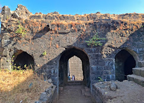

सुर्वणदुर्ग किल्ला
Location : Click Here For Google Map
- माहिती
- सुर्वणदुर्ग किल्ला महाराष्ट्र राज्याच्या रत्नागिरी जिल्ह्यात स्थित एक ऐतिहासिक किल्ला आहे. हा किल्ला अरबी समुद्राच्या किनाऱ्यावर वसलेला आहे आणि समुद्रात होणाऱ्या हल्ल्यांपासून संरक्षण करणारा एक प्रमुख किल्ला मानला जातो. किल्ल्याची बांधणी १६व्या शतकात झाली होती, आणि तो शिवाजी महाराजांच्या काळात महत्त्वपूर्ण ठरला.
किल्ल्याच्या प्रमुख संरचनांमध्ये भिंती, गडाचे प्रवेशद्वार आणि बंदुकीचे ठिकाणे या सर्वांचा समावेश आहे. किल्ल्याचे शिखर आणि संरचना समुद्राच्या दृष्टीने सुरक्षित रक्षण प्रदान करत होती, आणि किल्ल्याची संपूर्ण रचना त्याच्या सामरिक महत्त्वाची उदाहरण आहे.
किल्ल्याच्या शिखरावरून समुद्र आणि आसपासच्या परिसराचे सुंदर दृश्य दिसते. सुर्वणदुर्ग किल्ला त्याच्या स्थापत्यशास्त्र आणि संरक्षणात्मक महत्त्वाच्या कारणाने प्रसिद्ध आहे. किल्ल्याचे भव्य दृश्य आणि ऐतिहासिक महत्त्व पर्यटकांना आकर्षित करतात.
आजकाल, सुर्वणदुर्ग किल्ला एक लोकप्रिय पर्यटन स्थळ आहे, आणि त्याची स्थापत्य कला आणि सामरिक महत्त्व पाहण्यासाठी पर्यटक येथे येतात.
Explore the historical beauty




